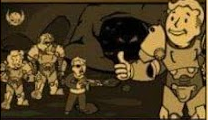
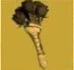

Llega el Parche de inventario
Este nuevo parche lega a Fallout 76 para para ayudar a
organ1zar mejo nuestro inventario cntre otras cosas A contimación
las novedades mas importantes:
Aumento del alijo, de 800 a 1200.
Nuevas pestañas en el Pip-Boy ahora armaduras y atuendos están por
separado y comida y bebida estan separadas de ayuda, lo cual
agilizara mucho la busqueda de objetos incorpora la pestaña
"nuevo"
donde encontraremos los últimos items nuestros Tambien se la actual
recogidos ordenados en el orden en el que se recogen.
Nueva función "peso apilado no muestra la el peso total de un iter que
tengamos en cantidad (Tip: atentos con los items de ayuda comida y
bebida, que suelen ser lo que mas se acumulan sin darse cuenta)
Tambien encontraremos mejoras en la interfaz de la vista en mapa de
las maquinas vendedoras de jugado res Ahora aparecen diferenciadas
amnas y armaduras por cantidad de estrellas legendarias, lo cual sin
duda nos ahorará muchos viajes rápidos.

Operaciones Diarias
A partir de esta actualizacsón completar una operación diaria
alcanzando el rango de "Maestre se garantizará la obtención de al
menos un objeto de entre las recompensas poco comunes.
Conocimiento Prohibido
La conocida misión secundaria ha sido reactivada luego de haber
solucionado los problemas con los datos técnicos. Y ahoa no solo
pueden depositarse en Campamento Aventura también son recibidos en
Fuerte Atlas por la escriba Odessa Valdez de la Hermandad del Acero,
a quien vemos en la siguiente imagen.
Consejo diario: no olvides llevar siempre un poco de Rad-X por si te
topas con una tormenta radiactiva
Novedades Tienda Atómica
En la tienda atómica se ha añadido una opción para que muestre solo
los items que no hemos comprado, para facilitar la navegación y
mejorar la visualización
Esta semana encontraremos las siguientes novedades:
Cámara de Habitaciones de Refugio 1500 átomos
Conjunto de sofas modulares
500 átomos
Servoarmadura de Ranger del
Parque 1200 átomos
Además de muchas ofertas entre las destacan los letreros de que
Quantum, Old Possum y Pickaxxe, Conjunto de bar elegante, Conjunto
de barra de Slocum's Joe, entre otras.
Evento por tiempo limitado!

No olvides reclamar la skin gratuita del "Rompecorazones para la
Llave Grifa y particıpar del evento Muero de Amor donde deberás
completar desafios diarios y semanales que otorgarán recompensas
como tarteras, kits de reparacon, sobres de perks y objetos de
tiempo limitado (atuendo de RobCo, Bungaló nústico y Casco de
pescador de langostas)